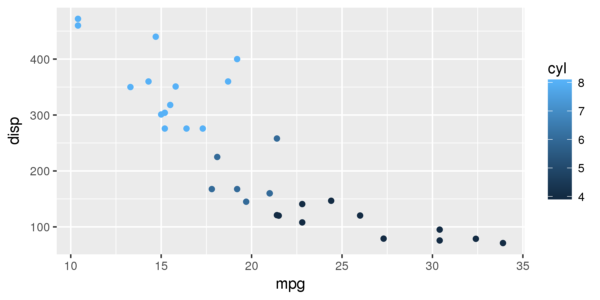
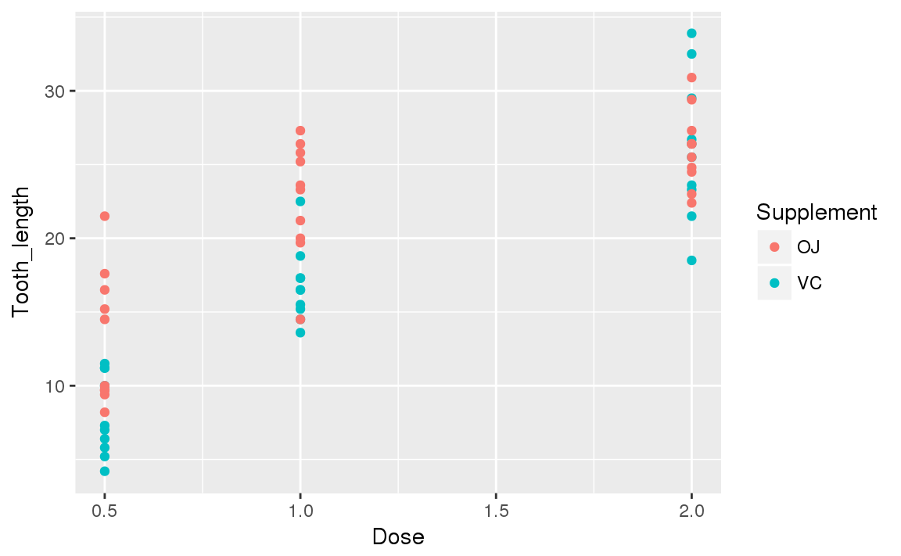
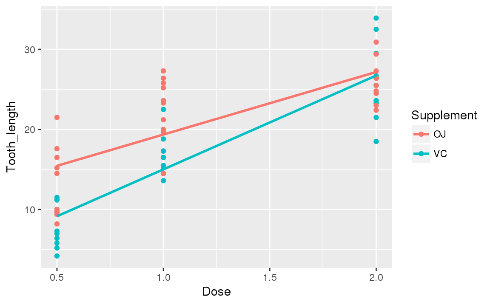
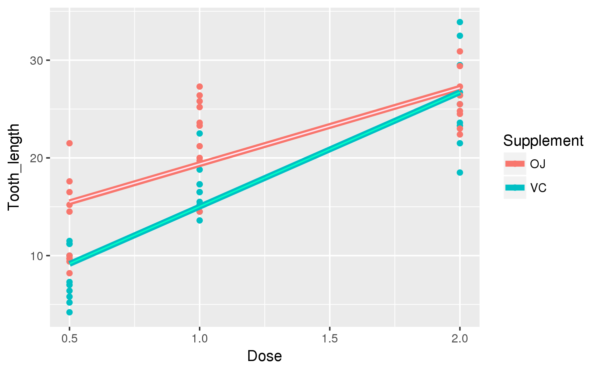
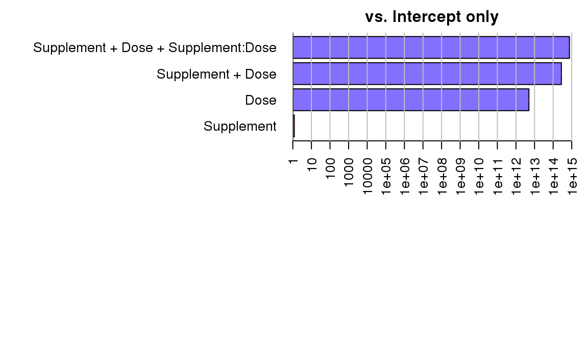
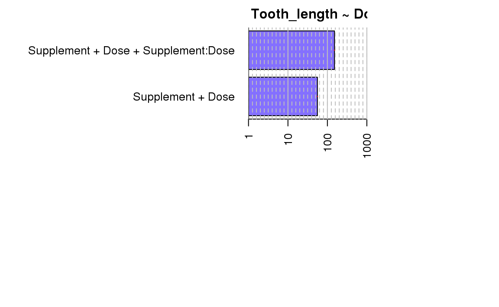
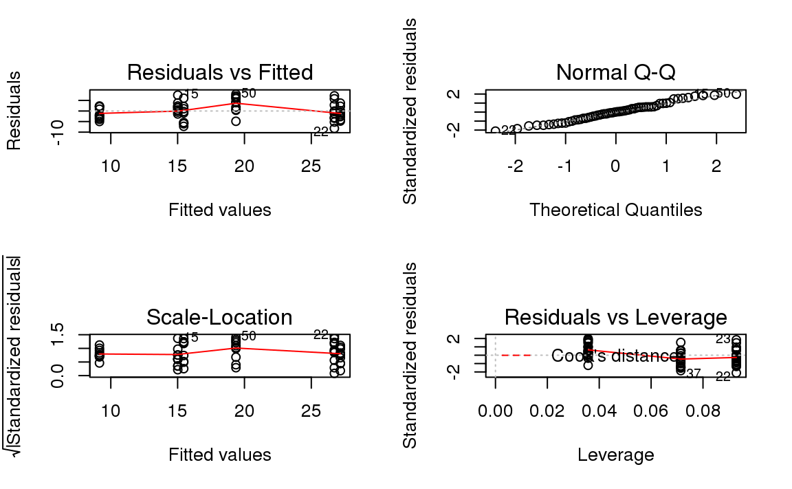
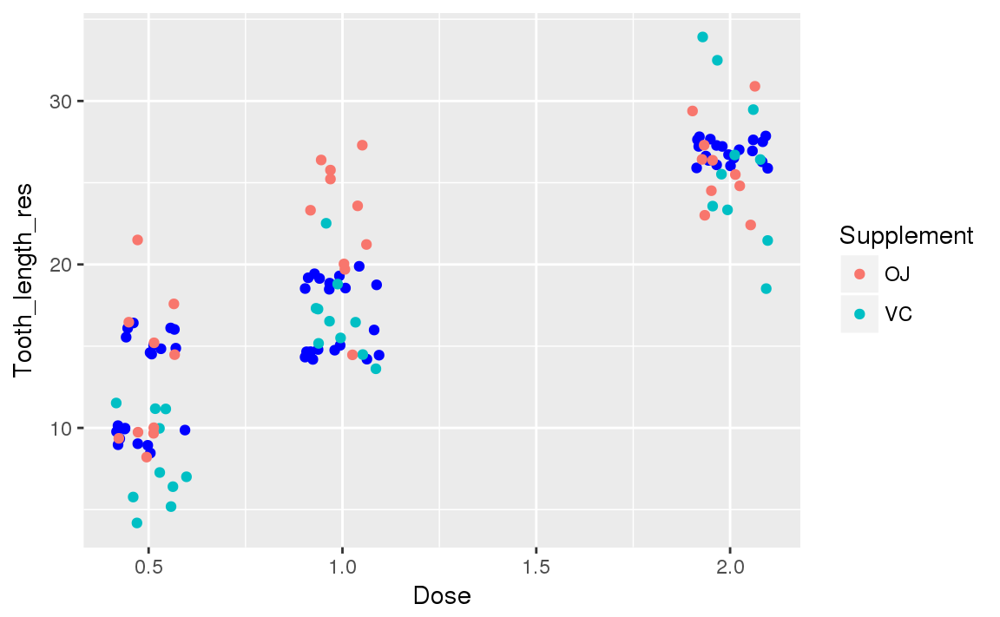

newbie_workshop
chroneru
2018/4/24
1.自己紹介
- @chroneru_mineru
- R歴はぎゅっとすると2年ぐらい
- Rについてのブログを書いてる
2.Rのインストール
windows
- Rのページに行きます。
- Mirrors からjapanのミラーサイトを選択してください。
- Download R x.x.x for Windowsをクリックしてダウンロードして実行する。(x.x.xはバージョンです。)
- 後はインストーラにしたがってください。
mac
- homebrewでのインストールだとこんな感じ
brew tap homebrew/science
brew install rlinux
- 簡易的な方法を示します。
- ubuntu
sudo apt-get install r-base- centos
sudo yum install epel-release
sudo yum --enablerepo=epel install R3.Rstudioのインストール
windows
- Rstudioのページからダウンロード，インストールします。
- 別に難しくない
mac
- homebrewでのインストール
- brew-cask必須！
brew cask install rstudiolinux
- ubuntu
wget https://download1.rstudio.org/rstudio-1.1.447-amd64.deb
sudo dpkg -i rstudio-1.1.447-amd64.deb- centos
sudo yum install wget
wget https://download2.rstudio.org/rstudio-server-rhel-1.1.442-x86_64.rpm
sudo yum install rstudio-server-rhel-1.1.442-x86_64.rpm4.Rの演算子
算術演算子
- ふつうの計算に使う
| 演算子 | 使い方 | 結果 |
|---|---|---|
+ |
1 + 2 |
3 |
- |
1 - 2 |
-1 |
* |
2 * 3 |
6 |
/ |
2 / 3 |
0.6666667 |
^ |
2 ^ 3 |
8 |
代入演算子
- 代入に使う
=は非推奨，<-を使う<<-はグローバル環境への代入<<-よりもassign関数を使うほうがいい
| 演算子 | 使い方 |
|---|---|
<- |
a <- 3 |
<<- |
a <<- 5 |
5.データ型
ベクトル
- Rではベクトルとして代入される。
- 文字列は
""でくくる。 - 数値はそのまま代入
- 論理値は
TRUEとFALSE
hoge <- "やっほー"
fuga <- 1.414
foo <- TRUE
hoge; fuga; foo
#> [1] "やっほー"
#> [1] 1.414
#> [1] TRUE- 複数の値を代入するときは
c()を使う- 型強制が起こる
- 数値は文字列に
- 論理値は数値か文字列に
- 型強制が起こる
hoge <- c("やっほー", "おっはー")
fuga <- c(1.414, 1.732)
foo <- c(TRUE,FALSE)
hoge; fuga; foo
#> [1] "やっほー" "おっはー"
#> [1] 1.414 1.732
#> [1] TRUE FALSEhoge2 <- c("やっほー", 1, TRUE)
fuga2 <- c(1.414, TRUE)
hoge2; fuga2
#> [1] "やっほー" "1" "TRUE"
#> [1] 1.414 1.000クイズ
次のベクトルはどんなデータになるでしょう
quiz1 <- c(1+TRUE, "やっほー")
quiz2 <- c(1+TRUE, 3) * FALSE正解は
quiz1
#> [1] "2" "やっほー"
quiz2
#> [1] 0 0TRUEは1に，FALSEは0になります。
リサイクルルール
- 小さいベクトルが，大きいベクトルにあわせて繰り返されます。
- ベクトルの長さによって警告が出る
a <- c(1,2,3,4)
b <- c(1,2)
c <- c(1,2,3)a * 3
#> [1] 3 6 9 12
a + b
#> [1] 2 4 4 6
b + a
#> [1] 2 4 4 6
a * c
#> Warning in a * c: longer object length is not a multiple of shorter object
#> length
#> [1] 1 4 9 4ベクトルの要素を参照する
ベクトルの要素は[1]からはじまる!
- ベクトルの参照は線形代数と一緒
[行番号,列番号]で参照する!
a <- c(1,2,3,4)
dim(a) <- c(2,2) #2次元配列
a
#> [,1] [,2]
#> [1,] 1 3
#> [2,] 2 4
a[1,2]
#> [1] 3
a[c(1,2),2]
#> [1] 3 4- 代入もできる
a
#> [,1] [,2]
#> [1,] 1 3
#> [2,] 2 4
tmp <- a[2,1]
a[2,1] <- a[1,2]
a[1,2] <- tmp
a
#> [,1] [,2]
#> [1,] 1 2
#> [2,] 3 4NA
NAはNot Available- なにかわからない値に使う
- 特別な値
na_vec <- c(NA, NA, NA)
is.na(na_vec)
#> [1] TRUE TRUE TRUE
na_vec + 1
#> [1] NA NA NA
na_vec == 1
#> [1] NA NA NA
na_vec == NA
#> [1] NA NA NA
na_vec != NA
#> [1] NA NA NAscanfみたいなのも用意されてる
- readline関数
a <- readline("入力してね: ")
#> 入力してね:
#> 入力してね: ここに入力- これを使うと簡単なクイズができる。
作ってみよう。
quiz <- function() {
answer <- "さくらんぼ"
ans_u <- readline("おうとうってなんだ？: ")
if (ans_u == answer) print("あってるよ")
else print("まちがってるよ")
}
quiz()
#> おうとうってなんだ？:
#> [1] "まちがってるよ"6.他言語との連携
6.1.C言語
- さっきのクイズをCにしてみると
#include "/usr/include/stdio.h"
#include "/usr/include/stdlib.h"
#include "/usr/include/string.h"
#include "/usr/include/R/R.h"
void quiz(char **ans_u);
void quiz(char **ans_u) {
char answer[] = "さくらんぼ";
char yes[] = "あってるよ";
char no[] = "まちがってるよ";
printf("おうとうってなんだ？: %p\n",*ans_u);
if(strcmp(answer,*ans_u) == 0) {
printf("%s",yes);
} else {
printf("%s",no);
}
}- gccだとエラーは出ないが，危険っぽい
gcc -shared -fPIC -I/usr/include/R -o quiz_point.so quiz_point.c- Rのバッチコマンドからビルドする
R CMD SHLIB quiz_point.cdyn.load("./C/quiz_point.so")
ANS <- "さくらんぼ"
.C('quiz', as.character(ANS))
#> list()
#> おうとうってなんだ？: まちがってるよ
dyn.unload("./C/quiz_point.so")R.hのinclude必要!- ヘッダファイルのincludeには絶対パスで指定するのが簡単
?.Cでデータ型を確認する- gccも使える
- gccのオプションでヘッダファイルのパスを指定する。
-I/usr/include/R- R.h内部でRconfig.hが呼び出されるため
- gccのオプションでヘッダファイルのパスを指定する。
Cのコードはめんどい
- 関数の戻り値は
voidにする。 - 引数はポインタを使う。
- RのデータとCの引数の型とが一致しない
- gccだと.soをつくれてしまう
- Rバッチだとエラーの特定がしづらい
Rからロード
- 形式は，
.soか.dll dyn.load(“hoge.so”)で読み込むdyn.unload(“hoge.so”)でアンロード- Rはメモリだけで処理するのでアンロードしておくといい
- fcloseぐらいに思っておく
.C('関数名',引数)か.Call()を使う- RにはC用のデータ型が用意されている
6.2.シェルスクリプト
シェルスクリプト
- シェルでも再現してみる。
- これはけっこう素直に扱える。
#!/bin/sh
if [ $# -eq 1 ]
then
echo "おうとうってなんだ？"
R --vanilla --no-save --slave -f ./quiz_sh.R --args $1
else
echo "引数の数が正しくありません。"
fians_u <- commandArgs(trailingOnly = TRUE)
diagnosis <- c("まちがってるよ\n",
"あってるよ\n")
cat( ans_u )
cat( "\n" )
cat(diagnosis[ (ans_u == "さくらんぼ") + 1 ])chmod u+x quiz_sh.shcommandArgs()
trailingOnly = TRUEを指定する。FALSEだとコマンドとオプションも渡される。
- Rコマンドのオプションに
--argsを指定する。 - 引数を複数わたすこともできる。
shebang
- シバンを変えることで
.Rスクリプトを直接実行できる。
#! /usr/bin/R --vanilla --no-save --slave -f
quiz <- function() {
answer <- "さくらんぼ"
ans_u <- readline("おうとうってなんだ？: ")
if (ans_u == answer) print("あってるよ")
else print("まちがってるよ")
}
quiz()chmod u+x ファイル名ヒアドキュメント
- シェルのヒアドキュメントも使える
R --vanilla --no-save --slave << EOF
quiz <- function() {
answer <- "さくらんぼ"
ans_u <- readline("おうとうってなんだ？: ")
if (ans_u == answer) print("あってるよ")
else print("まちがってるよ")
}
quiz()
\EOF6.3.他にも使える言語
- C++
- Python
- Ruby
- SQL
- Haskell
- Rust
などなどいろいろ用意されている。
7.パッケージ
パッケージとは
いろんな人がつくった便利な関数群
install.packages()でインストールlibrary()で読み込みrequire()を使う人もいる。
detach()でアンロード
install.packages("パッケージ名")
library(パッケージ名)
detach("package:パッケージ名", unload = TRUE)ヒアドキュメント
- ヒアドキュメントでログをとる。
- インストール失敗時にべんり!
- windowsは使えない。
R --no-save << EOF > logfile 2>&1
install.packages("パッケージ名")
\EOFtidyverse群
- よくつかわれるパッケージをまとめたもの
- データ処理につかう
- パイプ
%>%が使える - グラフをきれいにかける
install.packages("tidyverse")
library(tidyverse)- インストール時につまづきやすい
- エラーを読むと解決する
tidyverseの実践
- ggplotについての例を示す
- tidyverseパッケージが必要
- ggplot2でもOK
library(tidyverse)ggplot
- グラフをつくる関数
- レイヤーを重ねる
- 階層グラフィックス文法っていう書き方
geom関数でプロットの形式を変えれるggsave()で簡単にプロットを保存できる
とりあえずここまでにしておく。
mtcars_tibble <- as_tibble(mtcars)
ggplot(
data = mtcars_tibble,
mapping = aes(
x = mpg,
y = disp,
color = cyl
)
) +
geom_point()- tibbleという型をつかう
+で関数をつなぐ

8.関数
function()
function()をつかう。- ()のなかに引数をあたえる。
- 中のプログラムは
{}でくくる。
関数例:パレート図の統計量
あんまりよくない
- 個数を数える
- 大きいものからならべる(desc)
- 一個前のを自身に足す
- 割合を計算する
pareto_func <- function(vec) {
res_count <- c("a" = NA, "b" = NA, "c" = NA, "d" = NA, "e" = NA)
for(moji in c("a", "b", "c", "d", "e")) {
res_count[moji] <- sum(vec == moji)
}
res_count <- sort(res_count, decreasing = TRUE)
res_pareto <- cumsum(res_count)
res_pareto <- res_pareto / res_pareto[5]
list("count" = res_count, "density" = res_pareto)
}- 一般化していない
- あとでつかってみます
- 引数は，仮引数
function(a = 5)のようにデフォルトも設定できる
c("a" = NA)で名前を与えられる。names(ベクトル)で名前を確認できる。
sort()はならべかえcumsum()は累積和
cumsum( c(1, 2, 3, 4, 5))
#> [1] 1 3 6 10 159.データ
read.csv
- 標準で使える読み込み関数
stringAsFactors = FALSEにする- 文字列が変化するのを防ぐ
read.csv("ファイル名", stringAsFactors = FALSE)read_csv
- tidyverse群に用意されてる関数(readr)
read_csv(
"ファイル名",
locale = locale(encoding = "エンコード")
)write.csv
- 標準のcsv作成関数
row.names = FALSE- 行名が追加されるのを防ぐ
サンプルデータの作成
- Rにはさまざまなデータ作成関数がある
sample()runif()rnorm()rgamma()
sample
sample()で単純なデータを作成できるsizeは何個とりだすかreplaceは複数回とりだせるかprobは確率を指定する。- 合計が1じゃなくても大丈夫
sample(1:100, size = 2)
#> [1] 29 19その他
| 関数 | 確率分布 | 使い方 |
|---|---|---|
runif() |
一様分布 | runif(5) |
rnorm() |
正規分布 | rnorm(5) |
rgamma() |
ガンマ分布 | rgamma(5,shape = 2, rate = 5) |
rbeta() |
ベータ分布 | rbeta(5, shape1 = 0.5, shape2 = 0.5) |
- shapeはk, rateはシータ
- shape1はα, shape2はβ
10.使用例
パレート図
prob_vec <- sample(1:5, size = 5)
vec1 <- sample(
1:5,
size = 10000,
replace = TRUE,
prob = prob_vec
)
replace_abcde <- function(vec1) {
num <- 1
for(moji in c("a", "b", "c", "d", "e")) {
vec1[vec1 == num] <- moji
num <- num + 1
}
assign("vec1", vec1, envir = parent.env(environment()))
}
replace_abcde(vec1)
result <- pareto_func(vec1)
result
#> $count
#> c e a b d
#> 3293 2629 2086 1344 648
#>
#> $density
#> c e a b d
#> 0.3293 0.5922 0.8008 0.9352 1.0000- 図にすると
result <- as_tibble(result) %>%
mutate(
name = names(result$count),
count_density = count / sum(count)
)result %>%
ggplot() +
geom_hline(
yintercept = c(0.7,0.9,1),
size = 0.2,
color = "#ff0000"
) +
geom_bar(
aes(name, count_density, fill = density),
stat = "identity"
) +
geom_line(aes(name, density, group ="1")) +
geom_point(
aes(name, density, color = density),
size = 5
) +
scale_x_discrete(limits = result$name) +
scale_y_continuous(breaks = seq(0, 1, by = 0.1)) +
scale_color_gradient(low = "#006600", high = "#ccffcc") +
scale_fill_gradient(low = "#006600", high = "#ccffcc") +
# viridis::scale_fill_viridis(option="inferno") +
# viridis::scale_color_viridis() +
coord_cartesian(ylim = c(0,1)) +
labs(
x = names(result$count),
y = NULL
) +
theme(legend.position = "none")
# ggsave("pareto_graph.png")
11.統計処理
とりあえずやってみる。
ToothGrowthというデータセットを使ってみる
head(ToothGrowth)
#> len supp dose
#> 1 4.2 VC 0.5
#> 2 11.5 VC 0.5
#> 3 7.3 VC 0.5
#> 4 5.8 VC 0.5
#> 5 6.4 VC 0.5
#> 6 10.0 VC 0.5
class(ToothGrowth)
#> [1] "data.frame"- モルモットの歯のデータセット
VCかオレンジジュース(Oj)の用量と歯の長さ

方針
- tidyverse群がつかえるようにtibbleにする。
- 列名をわかりやすくする
- とりあえず散布図を作る
- 他の処理について考える
tibble型の威力
ToothGrowth2 <- as_tibble(ToothGrowth)
ToothGrowth2 %>% head(2) %>% knitr::kable()| len | supp | dose |
|---|---|---|
| 4.2 | VC | 0.5 |
| 11.5 | VC | 0.5 |
ToothGrowth2 %>% tail(2) %>% knitr::kable()| len | supp | dose |
|---|---|---|
| 29.4 | OJ | 2 |
| 23.0 | OJ | 2 |
列名を変更する
- ここは参考ぐらいに
names(ToothGrowth2) <- c("Tooth_length", "Supplement", "Dose")
ToothGrowth2 %>% head() %>% knitr::kable()| Tooth_length | Supplement | Dose |
|---|---|---|
| 4.2 | VC | 0.5 |
| 11.5 | VC | 0.5 |
| 7.3 | VC | 0.5 |
| 5.8 | VC | 0.5 |
| 6.4 | VC | 0.5 |
| 10.0 | VC | 0.5 |
散布図で様子見
ToothGrowth2 %>%
ggplot(aes(Dose, Tooth_length, color = Supplement)) +
geom_point()
線形回帰分析
lm()を使う
ToothGrowth2_VC_lm <- lm(Tooth_length ~ Dose, data = ToothGrowth2 %>% filter(Supplement == "VC"))
ToothGrowth2_OJ_lm <- lm(Tooth_length ~ Dose, data = ToothGrowth2 %>% filter(Supplement == "OJ"))
ToothGrowth2_lm <- list(VC_lm = summary(ToothGrowth2_VC_lm), OJ_lm = summary(ToothGrowth2_OJ_lm))
ToothGrowth2_lm$VC_lm$coefficients; ToothGrowth2_lm$OJ_lm$coefficients
#> Estimate Std. Error t value Pr(>|t|)
#> (Intercept) 3.29500 1.427060 2.308943 2.854201e-02
#> Dose 11.71571 1.078756 10.860392 1.509369e-11
#> Estimate Std. Error t value Pr(>|t|)
#> (Intercept) 11.550000 1.721951 6.707508 2.788784e-07
#> Dose 7.811429 1.301673 6.001070 1.824801e-06
ToothGrowth2_lm$VC_lm$coefficients; ToothGrowth2_lm$VC_lm$coefficients
#> Estimate Std. Error t value Pr(>|t|)
#> (Intercept) 3.29500 1.427060 2.308943 2.854201e-02
#> Dose 11.71571 1.078756 10.860392 1.509369e-11
#> Estimate Std. Error t value Pr(>|t|)
#> (Intercept) 3.29500 1.427060 2.308943 2.854201e-02
#> Dose 11.71571 1.078756 10.860392 1.509369e-11
# Tooth_length = 3.295 + 11.716 * Dose
# Tooth_length = 11.550 + 7.811 * Dose- 回帰直線のプロット
ToothGrowth2 %>%
group_by(Supplement) %>%
ggplot(aes(Dose, Tooth_length, color = Supplement)) +
geom_point() +
geom_smooth(method = "lm", se = FALSE)
12.ベイズ
ベイズ統計
- ToothGrowthでは母集団が少ない。
- なにもしていない時の歯の増加量がわからない。
- 特に事前情報がない。
そんなときはベイズ
baysian linear regression
- 要は線形回帰分析
ToothGrowth2_VC_bayes_lm <- MCMCpack::MCMCregress(Tooth_length ~ Dose, ToothGrowth2 %>% filter(Supplement == "VC"), verbose = 10000)
#>
#>
#> MCMCregress iteration 1 of 11000
#> beta =
#> 5.47369
#> 10.64170
#> sigma2 = 15.77352
#>
#>
#> MCMCregress iteration 10001 of 11000
#> beta =
#> 4.01607
#> 11.34625
#> sigma2 = 9.06792
ToothGrowth2_OJ_bayes_lm <- MCMCpack::MCMCregress(Tooth_length ~ Dose, ToothGrowth2 %>% filter(Supplement == "OJ"), verbose = 10000)
#>
#>
#> MCMCregress iteration 1 of 11000
#> beta =
#> 14.17890
#> 6.51548
#> sigma2 = 22.96599
#>
#>
#> MCMCregress iteration 10001 of 11000
#> beta =
#> 12.42007
#> 7.36562
#> sigma2 = 13.20275
ToothGrowth2_bayes_lm <- list(VC_bayes_lm = summary(ToothGrowth2_VC_bayes_lm), OJ_bayes_lm = summary(ToothGrowth2_OJ_bayes_lm))
ToothGrowth2_bayes_lm
#> $VC_bayes_lm
#>
#> Iterations = 1001:11000
#> Thinning interval = 1
#> Number of chains = 1
#> Sample size per chain = 10000
#>
#> 1. Empirical mean and standard deviation for each variable,
#> plus standard error of the mean:
#>
#> Mean SD Naive SE Time-series SE
#> (Intercept) 3.312 1.487 0.01487 0.01452
#> Dose 11.703 1.127 0.01127 0.01127
#> sigma2 14.662 4.276 0.04276 0.04573
#>
#> 2. Quantiles for each variable:
#>
#> 2.5% 25% 50% 75% 97.5%
#> (Intercept) 0.4164 2.353 3.325 4.267 6.278
#> Dose 9.4136 10.978 11.702 12.423 13.927
#> sigma2 8.5478 11.647 13.928 16.818 24.859
#>
#>
#> $OJ_bayes_lm
#>
#> Iterations = 1001:11000
#> Thinning interval = 1
#> Number of chains = 1
#> Sample size per chain = 10000
#>
#> 1. Empirical mean and standard deviation for each variable,
#> plus standard error of the mean:
#>
#> Mean SD Naive SE Time-series SE
#> (Intercept) 11.571 1.794 0.01794 0.01752
#> Dose 7.796 1.360 0.01360 0.01360
#> sigma2 21.347 6.226 0.06226 0.06658
#>
#> 2. Quantiles for each variable:
#>
#> 2.5% 25% 50% 75% 97.5%
#> (Intercept) 8.077 10.413 11.586 12.723 15.15
#> Dose 5.034 6.922 7.795 8.665 10.48
#> sigma2 12.445 16.958 20.279 24.486 36.19Intercept <- c(ToothGrowth2_bayes_lm$VC_bayes_lm$statistics[1,1],
ToothGrowth2_bayes_lm$OJ_bayes_lm$statistics[1,1])
slope <- c(ToothGrowth2_bayes_lm$VC_bayes_lm$statistics[2,1],
ToothGrowth2_bayes_lm$OJ_bayes_lm$statistics[2,1])
Intercept; slope
#> [1] 3.312116 11.570653
#> [1] 11.703262 7.796404
ToothGrowth2 %>%
group_by(Supplement) %>%
ggplot(aes(Dose, Tooth_length, color = Supplement)) +
geom_point() +
geom_smooth(method = "lm", se = FALSE, size = 2) +
stat_function(
fun = function(Dose) Intercept[1] + slope[1] * Dose,
geom = "line",
color = "#00ffc4",
size = 0.6,
xlim = c(0.5, 2.0),
show.legend = TRUE
) +
stat_function(
fun = function(Dose) Intercept[2] + slope[2] * Dose,
geom = "line",
color = "#ffe4f1",
size = 0.5,
xlim = c(0.5, 2.0),
show.legend = TRUE
)MCMCregress
MCMCpackパッケージを使う。MCMCpack::MCMCregressでMCMC法での回帰直線を作成する。- デフォルトでバーンインは1000回,イテレーションは10000回
- verboseを設定すると進行状況と各変数の確率分布を
printで表示できる。
MCMC法による線形回帰の結果を通常の線形回帰分析と重ねあわせてみると
- だいたいおなじ
- あくまで目安

13.BayesFactor
ベイズファクター
- 尤度を比較する指標
- 事後確率の比と事前確率の比の比
- すごいわかりづらい
ある仮説のときにデータがこうなってるよね?
これって別の仮説の時のデータだとしたらどっちいいんかな?ってこと
anovaBF
BayesFactor::anovaBF- 分散を解析する関数
- factorじゃないと使えないらしい
- 質的変数として扱えるならそうする
- Doseは比例尺度と考えられる(量的変数)
- 今回は順位尺度と見る
bf <- BayesFactor::anovaBF(
Tooth_length ~ Dose,
data = ToothGrowth2
)
#> Warning: data coerced from tibble to data frame
#> Error in createDataTypes(formula, whichRandom, data, analysis = "anova"): anovaBF() cannot be used with nonfactor independent variables. Use lmBF(), regressionBF(), or generalTestBF() instead.anovaBFの使用
- 公式にのっとってデータを整理していく
ToothGrowth2$Dose <- factor(ToothGrowth2$Dose)
levels(ToothGrowth2$Dose) <- c("Low", "Medium", "High")bf <- BayesFactor::anovaBF(
Tooth_length ~ Supplement * Dose,
data = ToothGrowth2
)
#> Warning: data coerced from tibble to data frame
bf
#> Bayes factor analysis
#> --------------
#> [1] Supplement : 1.198757 ±0.01%
#> [2] Dose : 4.983636e+12 ±0%
#> [3] Supplement + Dose : 2.781856e+14 ±1.24%
#> [4] Supplement + Dose + Supplement:Dose : 7.537123e+14 ±1.35%
#>
#> Against denominator:
#> Intercept only
#> ---
#> Bayes factor type: BFlinearModel, JZS- 今回はplotが用意されているので
plot()を使う

プロット結果
- 見た感じ
Supplementは関係なさそう Supplement + Dose + Supplement:Doseで仮設を立てるのが最も良さそう
というわけでfactorをnumericにするんですが 少し失敗しました。笑
levels(ToothGrowth2$Dose) <- c(0.5, 1, 2)
ToothGrowth2$Dose <- as.numeric(as.character(ToothGrowth2$Dose))
str(ToothGrowth2$Dose)
#> num [1:60] 0.5 0.5 0.5 0.5 0.5 0.5 0.5 0.5 0.5 0.5 ...ふたたび線形回帰分析
- 手順は同じ
# Tooth_length = b0 + b1*Supplement + b2*Dose + b3*Supplement*Dose
ToothGrowth_lm_result <- lm(Tooth_length ~ Supplement * Dose, data = ToothGrowth2)
summary(ToothGrowth_lm_result)
#>
#> Call:
#> lm(formula = Tooth_length ~ Supplement * Dose, data = ToothGrowth2)
#>
#> Residuals:
#> Min 1Q Median 3Q Max
#> -8.2264 -2.8462 0.0504 2.2893 7.9386
#>
#> Coefficients:
#> Estimate Std. Error t value Pr(>|t|)
#> (Intercept) 11.550 1.581 7.304 1.09e-09 ***
#> SupplementVC -8.255 2.236 -3.691 0.000507 ***
#> Dose 7.811 1.195 6.534 2.03e-08 ***
#> SupplementVC:Dose 3.904 1.691 2.309 0.024631 *
#> ---
#> Signif. codes: 0 '***' 0.001 '**' 0.01 '*' 0.05 '.' 0.1 ' ' 1
#>
#> Residual standard error: 4.083 on 56 degrees of freedom
#> Multiple R-squared: 0.7296, Adjusted R-squared: 0.7151
#> F-statistic: 50.36 on 3 and 56 DF, p-value: 6.521e-16- ggplotを使っていく
- 見やすい方
ToothGrowth2 <- ToothGrowth2 %>%
mutate(
Supplement_num = unclass(.$Supplement),
Tooth_length_res = predict(ToothGrowth_lm_result)
)
ToothGrowth2 %>% head() %>% knitr::kable()| Tooth_length | Supplement | Dose | Supplement_num | Tooth_length_res |
|---|---|---|---|---|
| 4.2 | VC | 0.5 | 2 | 9.152857 |
| 11.5 | VC | 0.5 | 2 | 9.152857 |
| 7.3 | VC | 0.5 | 2 | 9.152857 |
| 5.8 | VC | 0.5 | 2 | 9.152857 |
| 6.4 | VC | 0.5 | 2 | 9.152857 |
| 10.0 | VC | 0.5 | 2 | 9.152857 |

- 残差が同じぐらいの広がり
- 正規性が見て取れる
- クックの距離が0.5を超えているようなので当てはまりもよさそう
ToothGrowth2 %>%
ggplot(aes(Dose, color = Supplement)) +
geom_point(aes(y = Tooth_length_res), position = position_jitter(width = 0.1, height = 1), color = "#0000ff") +
geom_point(aes(y = Tooth_length), position = position_jitter(width = 0.1))
- 95%信頼区間でのみ
b3 * Supplement * Doseが棄却される。 - イテレーションしたらもう少し違うかも。
14.rmarkdown
rmarkdownの準備
- File > New File > R markdown > Document HTML(ラジオボタン) > OK
- はじめてrmdファイルを作ろうとするとエラーが出る
- とりあえず，インストールしてください。
install.packages(c("bitops", "caTools"))yamlヘッダ
- 出力するファイルのオプションを設定
---
title: "たいとる"
author: "書いた人"
date: "日付"
output: 出力形式:
css: "cssのパス"
self_contained: TRUEかFALSE
---
出力形式
| 指定方法 | 出力形式 |
|---|---|
| html_document | html |
| pdf_document | |
| word_document | word |
| ioslides_presentation | htmlのスライド |
| revealjs::revealjs_presentation | イケてるスライド |
| bookdown::gitbook | 本 |
- 他にもいろいろな出力形式がある。
- pdfはlatexをつかうので、ハマる。
#CRANから
install.packages("revealjs")
#githubから
install.packages("devtools")
install_github("rstudio/revealjs")install.packages("bookdown")pdfの出力
- pdfを出力するとエラーが出る
- texライブラリが足りないみたい
output: pdf_document
Ctrl + Shift + K (knit)
texのログファイル
- pdfをレンダリングするとログが出るので読む
- 大事なところだけでいい
! LaTeX Error: File `titling.sty' not found. ! ==> Fatal error occurred, no output PDF file produced!
titling.styがないということ
texライブラリ
- texライブラリを追加すればOK
wget ftp://ftp.jaist.ac.jp/pub/CTAN/macros/latex/contrib/titling.zip
unzip titling.zip
cd titling.zip
latex titling.ins
sudo cp titling.sty /usr/share/texlive/texmf-dist/tex/latex/titling/
sudo texhash- 必要ないかもだけど一応
# You are recommended to install the tinytex package to build PDF.FALSE
On Rstudio
install.packages("tinytex")
15.コードチャンク
コードチャンクの書き方
- 先頭の\はエスケープです。
- 取り除いてください。
\```{r}
\Rのコード
\```
Ctrl + Alt + Iでチャンクを追加できる
チャンクオプション
{r チャンク名, オプションの指定}
| オプション | T, F | 結果 |
|---|---|---|
| include | FALSE | コードと結果を表示しない |
| echo | FALSE | コードを表示しない |
| message | FALSE | メッセージを表示しない |
| eval | FALSE | 実行しない |
- ほかにもいろいろある
- オプションのチェック方法
knitr::opts_chunk$get
setupチャンク
{r setup, include = FALSE}- setupのチャンクは一度しか使えない。
include = FALSEがよく使う指定。- コードチャンクを表示しない
- 今回は次のように設定してある。
- bookdownは違う設定をしてある。
\```{r setup, include=FALSE}
knitr::opts_chunk$set(
comment = "#>",
collapse = TRUE,
fig.show = "hold"
)
\```
エンジン
{r チャンク名, engine="言語名"}- ```
言語名:チャンク名 {言語名 チャンク名, オプション}
他言語 に書いた言語以外にもいろいろ使える。
tex数式
- インラインは
$数式$ - ブロックラインは
$$数式$$
たとえば,\(E=mc^2\), \(mgh=\frac{1}{2}mv^2\)
\[E=mc^2\] \[mgh=\frac{1}{2}mv^2\]
texコマンド
- コマンドは\をつける
| コマンド | 効果 |
|---|---|
\text |
演算子など記号を文字にする |
{\rm } |
文字がイタリックになるのをやめる |
_{} |
下付き文字 |
^{} |
上付き文字 |
\theta |
\(\theta\)ギリシャ文字(ほかにも使えます) |
\frac{a}{b} |
\(\frac{a}{b}\)の分数をつくる |
\int_a^b |
\(\int_a^b\)こんな感じの積分を作る |
16.shiny
shinyってなんぞ
- Rでwebアプリを作れるやつ
- shinyパッケージをインストールする
- ここ数年で仕様が変化している模様
- ui.Rとserver.Rからapp.Rに
- shinyサーバーをインストールして構築するのは難易度高め
shinyserverproを使うとユーザー認証ができたりする。
- ここからは
eval=FALSEにしてある- shinyのある環境でお試しください。
- 簡単に書いてみると
ui <- fluidPage(
titlePanel("たいとる"),
mainPanel(),
sidebarPanel()
)
server <- function(input, output) {
}
shinyApp(ui = ui, server = server)- ui.Rでの場合
shinyUI()でui設定を{}でくくって記述
- server.Rでの場合
shinyServer()でserver設定をfunction(input,output){}の関数内で記述
- app.Rでの場合
ui,serverオブジェクトを定義shinyApp(ui = ui, server = server)でアプリ起動
widget
- さっきのはシンプルな形
- 入力フォームや出力などのウィジェットを定義する。
ls(envir = environment(shiny::numericInput)) %>%
# ..*で任意の一文字以上, (Input|Output)でInputまたはOutput, $は行末のアンカー
str_subset("..*(Input|Output)$")
#> [1] "cancelOutput" "checkboxGroupInput"
#> [3] "checkboxInput" "dataTableOutput"
#> [5] "dateInput" "dateRangeInput"
#> [7] "fileInput" "htmlOutput"
#> [9] "imageOutput" "numericInput"
#> [11] "passwordInput" "plotOutput"
#> [13] "restoreInput" "selectInput"
#> [15] "selectizeInput" "serializerFileInput"
#> [17] "sliderInput" "snapshotPreprocessInput"
#> [19] "snapshotPreprocessorFileInput" "snapshotPreprocessOutput"
#> [21] "tableOutput" "textAreaInput"
#> [23] "textInput" "textOutput"
#> [25] "uiOutput" "updateCheckboxGroupInput"
#> [27] "updateCheckboxInput" "updateDateInput"
#> [29] "updateDateRangeInput" "updateNumericInput"
#> [31] "updateSelectInput" "updateSelectizeInput"
#> [33] "updateSliderInput" "updateTextAreaInput"
#> [35] "updateTextInput" "verbatimTextOutput"
ui <- fluidPage(
titlePanel("numericInput&sliderInput"),
fluidRow(
column(6,
numericInput("test_num", "数字を入力してね", value = NA, min = 0, max = 20)),
column(6,
sliderInput("test_slide", "スライドしよう", min = 0, max = 100, value = 20))
),
textOutput("test_text")
)
server <- function(input, output) {
output$test_text <- renderText({
paste0("入力した数字は,", input$test_num, "スライダーの数字は,", input$test_slide)
})
}
shinyApp(ui = ui, server = server)output$id名に出力を代入する。
- render系の関数は出力時に使う。
ls(envir = environment(shiny::renderText)) %>%
str_subset(".*render.*")
#> [1] "as.tags.shiny.render.function" "knit_print.shiny.render.function"
#> [3] "renderDataTable" "renderImage"
#> [5] "renderPage" "renderPlot"
#> [7] "renderPrint" "renderReactLog"
#> [9] "renderTable" "renderText"
#> [11] "renderUI"reactive
いままでやったのはreactivityとは少し違う。
render*はinputの値が変わるたびに、再実行する。- つまり、不要な更新も行われるということ。
- さっきの例だと
numericInputの値しか変わらないのにsliderInputの値を再代入してしまう。
reactive()を使おう!
reactiveを使ってみる。
ui <- fluidPage(
titlePanel("numericInput&sliderInput"),
fluidRow(
column(6,
numericInput("test_num", "数字を入力してね", value = NA, min = 0, max = 20)),
column(6,
sliderInput("test_slide", "スライドしよう", min = 0, max = 100, value = 20))
),
textOutput("test_text")
)
server <- function(input, output) {
reactive_test_num <- reactive(list(input$test_num, input$test_slide))
output$test_text <- renderText({
paste0("入力した数字は,", reactive_test_num()[[1]], "スライダーの数字は,", reactive_test_num()[[2]])
})
}
shinyApp(ui = ui, server = server)reactiveは関数オブジェクトの形をとる。[[]]でのアクセスは、ベクトルを返させる。
reactiveの関数は、{}でくくると複数行の表現式を受け取れる。reactiveは、メモリ中のinput変数が変わったら、再実行される。- 変わらなければ再代入されない。
- なんども関数を実行することは速度の低下につながる。
observer
observeは常にinputを監視する。- 挙動は
reactiveと同じ。
ui <- fluidPage(
titlePanel("numericInput&sliderInput"),
fluidRow(
column(6,
numericInput("test_num", "数字を入力してね", value = NA, min = 0, max = 20)),
column(6,
sliderInput("test_slide", "スライドしよう", min = 0, max = 100, value = 20))
),
textOutput("test_text")
)
server <- function(input, output) {
#observe(list(input$test_num, input$test_slide))
observe_test <- reactiveValues()
observe({observe_test$num <- input$test_num; observe_test$slide <- input$test_slide})
output$test_text <- renderText({
paste0("入力した数字は,",
#input$test_num,
observe_test$num,
"スライダーの数字は,",
#input$test_slide
observe_test$slide)
})
}
shinyApp(ui = ui, server = server)observe()は,reactiveと決定的に違う。inputが変わらなくても、observe内の関数を再実行する。render*内の関数を外に押し出すのにいいかも。
endpoint
render*の関数
mermaid("
graph LR
id1[reactive]
id2{observer}
id3>endpoint]
id1---id2
id2---id3")- イメージとしてはこんな感じ
- 最後に
render*でoutputにわたすrenderText()をさっき使った
mermaid()は後述
ui <- fluidPage(
titlePanel("numericInput&sliderInput"),
fluidRow(
column(6,
numericInput("test_num", "数字を入力してね", value = NA, min = 0, max = 20)),
column(6,
sliderInput("test_slide", "スライドしよう", min = 0, max = 100, value = 20))
),
dataTableOutput("test_table")
)
server <- function(input, output) {
check_var <- reactive(data.frame(num = input$test_num, slide = input$test_slide))
observe({table_1 <- as.data.frame(check_var())})
output$test_table <- renderDataTable({as.data.frame(check_var())})
}
shinyApp(ui = ui, server = server)renderDataTable()はdata.frameとmatrixを出力renderTable()はxtable::xtableを使うので注意！- 詳しくは
?shiny::renderDataTable
基本的には, reactive, endpoint, がわかればOK!
17.shinyのレイアウト
*Panel
- 基本的には
*Panelで書けばいい。 sidebarLayout()も簡単
ls(envir = environment(shiny::titlePanel)) %>%
str_subset(".*Panel$")
#> [1] "absolutePanel" "conditionalPanel" "fixedPanel"
#> [4] "headerPanel" "inputPanel" "mainPanel"
#> [7] "navlistPanel" "sidebarPanel" "tabPanel"
#> [10] "tabsetPanel" "titlePanel" "updateNavlistPanel"
#> [13] "updateTabsetPanel" "wellPanel"fluidRow
fluidRow()の中にcolumn(width, )でレイアウトしていく- いままで使ってたやつ
column(width, )のwidthは,同一のfluidRow()内で合計12になるようにする。- 2つに等分するなら
width = 6 - 3等分なら
width = 4 - 自由に、
width = 2,width = 4,width = 6もOK
- 2つに等分するなら
css
- app.R, ui.R, server.Rのあるところにcssを置く
shiny::includeCSS()でcssファイルを指定する。(パス無し)wwwディレクトリをapp.R, ui.R, server.Rのあるところに作るwww内にcssファイルを置くfluidPage(theme = "css", )で指定する。tags$head()内のtags$link()で設定する
tags$head()内のtags$style()で直接スタイルを書く
ui <- fluidPage(
#失敗,たぶんリポジトリのディレクトリ構造が干渉してる
# theme = "shiny_css/test_shiny_css.css",
#失敗,たぶん上と同じ理由
# tags$head(
# tags$link(rel = "stylesheet", type = "text/css", href = "shiny_css/test_shiny_css.css")
# ),
#これはうまくいく。パスはRmd起点にしてある。
#includeCSS("www/shiny_css/test_shiny_css.css"),
headerPanel("numericInput&sliderInput"),
fluidRow(
column(6,
numericInput("test_num", "数字を入力してね", value = NA, min = 0, max = 20)),
column(6,
sliderInput("test_slide", "スライドしよう", min = 0, max = 100, value = 20))
),
dataTableOutput("test_table")
)
server <- function(input, output) {
check_var <- reactive(data.frame(num = input$test_num, slide = input$test_slide))
observe({table_1 <- as.data.frame(check_var())})
output$test_table <- renderDataTable({as.data.frame(check_var())})
}
shinyApp(ui = ui, server = server)- ちょー見づらいけど、テストだからわかりやすく。
googleapi
- googleapiのcssを
@importする - 日本語は開発中らしい
- earlyaccessでcssを読み込める
ui <- fluidPage(
tags$head(
tags$style(HTML("
/*
@import url(//fonts.googleapis.com/earlyaccess/nicomoji.css);
h1, h2, h3, h4, h5, h6, p {
font-family: 'Nico Moji', cursive;
}
*/
/*
@import url(//fonts.googleapis.com/earlyaccess/hannari.css);
h1, h2, h3, h4, h5, h6, p {
font-family: 'Hannari', serif;
}
*/
"))
),
headerPanel("数字の入力練習"),
fluidRow(
column(6,
numericInput("test_num", "数字を入力してね", value = NA, min = 0, max = 20)),
column(6,
sliderInput("test_slide", "スライドしよう", min = 0, max = 100, value = 20))
),
dataTableOutput("test_table")
)
server <- function(input, output) {
check_var <- reactive(data.frame(num = input$test_num, slide = input$test_slide))
observe({table_1 <- as.data.frame(check_var())})
output$test_table <- renderDataTable({as.data.frame(check_var())})
}
shinyApp(ui = ui, server = server)18.htmlwidgets
htmlwidgetsとは
- javascriptをつかってRをインタラクティブにしようってこと
- html系ならなんでも組み合わせられる
- ただし、相互干渉の可能性あり
- (いっぱいあります)[http://gallery.htmlwidgets.org/]
- 今回は
leafletとDiagrammeRを紹介 - 主に
DiagrammeR
- 今回は
leaflet
- いけいけなマップを生成する。
# ダブルクウォーテーションを使う
mermaid('
graph LR
first["leaflet()"]
second["addTiles()"]
last[他の情報]
first --> second
second --> last')
map_df <- data.frame(
popup = c("はこだて", "函館駅", "新函館北斗駅", "MIRAI BASE"),
lng = c(140.72881, 140.7277, 140.648376, 140.757159),
lat = c(41.768793, 41.773269, 41.904698, 41.814461)
)
# 函館駅と新函館駅を結ぶ
leaflet() %>%
addTiles() %>%
addMarkers(lng = map_df$lng[2:3], lat = map_df$lat[2:3], popup = map_df$popup[2:3]) %>%
addPolylines(lng = map_df$lng[2:3], lat = map_df$lat[2:3])Leaflet Route Machine
- 経路探索用のleafletプラグイン
- まだ
leafletには用意されてない。 rMapsを使う。rChartsが依存関係
R --no-save << EOF > install_rCharts.log 2>&1
devtools::install_github("rmnathv/rCharts")
\EOFR --no-save << EOF > install_rMaps.log 2>&1
devtools::install_github("rmnathv/rMaps")
\EOF- 絶賛失敗中です。
- jsコード読んでないのでどこが悪いかわからない。
- そのうち完成させます。
library(rMaps); library(leaflet)
map <- Leaflet$new()
map$setView(c(map_df$lat[1], map_df$lng[1]), zoom = 15)
#map$marker(c(map_df$lat[2], map_df$lng[2]), bindpopup = map_df$popup[2])
#map$marker(c(map_df$lat[4], map_df$lng[4]), bindpopup = map_df$popup[4])
map$addAssets(css = c("https://unpkg.com/leaflet@1.2.0/dist/leaflet.css", "https://unpkg.com/leaflet-routing-machine@latest/dist/leaflet-routing-machine.css"),
jshead = c("https://unpkg.com/leaflet-routing-machine@latest/dist/leaflet-routing-machine.js", "https://unpkg.com/leaflet@1.2.0/dist/leaflet.js"))
map$setTemplate(afterScript = sprintf("
<script>
L.Routing.control({
waypoints: [
L.latlng(41.77327, 140.7277),
L.latlng(41.81446, 140.7572)
]
}).addTo(map);
</script>
"))
maplibpng
leafletのインストール時にエラーが出る場合がある。
/bin/sh: libpng-config: command not found
read.c:3:17: 致命的エラー: png.h: No such file or directory
#include <png.h>
ERROR: compilation failed for package ‘png’- 一応、失敗例も
- wget以下が成功例
# 失敗
sudo yum install libpng-config
# 失敗
sudo yum install libpng.x86_64
wget http://prdownloads.sourceforge.net/libpng/libpng-1.6.34.tar.gz
tar zxvf libpng-1.6.34.tar.gz
cd libpng-1.6.34
./configure
make
sudo make install
export CPLUS_INCLUDE_PATH=/usr/local/include
export LD_LIBRARY_PATH=/usr/local/lib
export LIBRARY_PATH=/usr/local/libR --no-save << EOF > install_png.log 2>&1
install.packages("png")
\EOFR --no-save << EOF > install_leaflet.log 2>&1
install.packages("leaflet")
\EOF19.DiagrammeR
DiagrammeRとは
graphvizとmermaidが主力- パイプを使った図の生成も可能
- DOT言語をベースにしている記述方法
- 方言がある
graphviz
grViz関数
grViz("
digraph prac_grviz {
//グラフ全体の設定
graph [ rankdir = LR ]
//ノードの設定
node []
a; b; c;
//エッジの設定
edge []
a -> b -> c
}
")- コメントアウトは
//,/* */,#が使える。 digraph グラフ名 { グラフの情報 }で書く- ダウンストリーム的に上から下に順ぐりに書く
->で有向,--で無向
grViz("
digraph gogyo {
graph [ charset = 'UTF-8' ]
node [ shape = 'circle']
a [ label = '木' ];
b [ label = '火' ];
c [ label = '土' ];
d [ label = '金' ];
e [ label = '水' ];
edge []
a -> b -> c -> d -> e [ arrowhead = 'none' ]
a -> c -> e -> b -> d -> a
}
")[label = 'なまえ']で表示する名前を書きます。[shape = 'circle']でノードの形を設定します。[arrowtail = 'none', arrowhead = 'none']でエッジの設定をします。五行を書いてみたのですが、全然綺麗じゃないですね。
grViz("
digraph gogyo_resetting {
graph [ charset = 'UTF-8',
rankdir = TB,
// layout = dot
// layout = neato
// layout = twopi
layout = circo
]
node [ shape = 'circle',
width = 0.9 ]
a [ label = '木' ];
b [ label = '火' ];
c [ label = '土' ];
d [ label = '金' ];
e [ label = '水' ];
edge []
a -> b -> c -> d -> e [ arrowhead = 'none' ]
a -> c -> e -> b -> d -> a
{rank = min; a;}
{rank = same; b; e;}
{rank = max; c; d;}
}
")- とても惜しい感じになってますね。
- こんな感じでグラフが自動生成されてしまうため。
- 調整がかなり難しい。
footnumber
grViz("
digraph c_pointer {
graph [
charset = 'UTF8',
rankdir = LR,
newrank = true,
compound = true
]
node [
shape = 'box'
]
subgraph cluster_a {
label = '003'
/*
// 003
003 [ label = '@@1-1' ]
*/
// a
a [ label = '@@1-1' ]
}
// *a
pointer_pointer [ label = '@@1-2' ]
// **a
base_pointer_pointer [ label = '@@1-3' ]
subgraph cluster_b {
label = '002'
/*
// 002
002 [ label = '@@2-1' ]
*/
// b
b [ label = '@@2-1' ]
}
// *b
base_pointer [ label = '@@2-2' ]
subgraph cluster_c {
label = '001'
/*
// 001
001 [ label = '@@3-1' ]
*/
// c\\n114
c [ label = '@@3-1' ]
// base [ label = '114' ]
}
a -> b [ lhead = cluster_b, color = red ];
b -> c [ lhead = cluster_c,arrowtail = diamond, color = red]
pointer_pointer -> b
base_pointer_pointer -> c
base_pointer -> c
{rank = same; a; pointer_pointer; base_pointer_pointer;}
{rank = same; b; base_pointer;}
{rank = same; c;}
}
[1]: c( 'a\\n002', '*a\\n001', '**a\\n114')
[2]: c( 'b\\n001', '*b\\n114')
[3]: c( 'c\\n114')
")@@の後に数字をつける@@1-1みたいにすると複数のfootnumberをつけれる[footnumber]:で属性を設定できるgraph graph_name {}の外はRの表現を使える- Rの表現式でのエスケープとhtmlにわたす改行文字の表現で
\\nとなる
mermaid
mermaidというグラフ生成方法もある- 記述が簡単
- 優秀
- 通常のフローチャート
- シーケンスダイアグラム
- ガントチャート
- マジで優秀
- なんどでもいう、優秀
mermaid("
graph LR
id1[四角]
id2(角丸)
id3{ダイヤ}
id4>よこっちょ削り]
id5((円))
id1 --- id2
id2 --> id3
id3 ---|こっち| id4
id3 --円だよ--> id5
")- すっきりした書き心地
- 上から順番に書いていく
graphは通常のグラフLR,RL,TB(TD),BTで全体の方向を指定
- 表示する文字は直接書いてOK！
- ただし、文字列を明示するには
""でくくる- シングルクウォーテーションは効かない
- そのため、
mermaid('グラフ')で全体をくくる
- 矢印はいっぱいある
- 規則性があるのでわかりやすい
| 無向 | 有向 | 効果 |
|---|---|---|
--- |
--> |
ふつう |
-.- |
-.-> |
ドット |
=== |
==> |
太い |
---|hoge| |
-->|hoge| |
テキストつき |
-- hoge --- |
-- hoge --> |
テキストつき |
-.->|hoge| |
-. hoge .-> |
テキストつきドット |
sequenceDiagram
- ダイアグラムも簡単に作れる
mermaid("
sequenceDiagram
participant aomori as 新青森
participant kikonai as 木古内
participant hokuto as 新函館北斗
participant hakodate as 函館
aomori->>kikonai: 新幹線
kikonai->>hokuto: 新幹線
hokuto--xhakodate: 新幹線
hokuto->>hakodate: JR
Note over aomori,kikonai: 青函トンネル
")sequenceDiagramを書くparticipant 名前で各シーケンスの名前を設定participant id as 名前でid名で扱えるようになる。(エイリアス)
エッジ: テキストでテキストを入れられるNote 配置 Actor: テキストでメモを入れられる。left of,right of,over- Actor(ノード)を2つ設定するとまたいでNoteを入れられる。
- 矢印はflowchartとはまた違う。
- 例のごとくいっぱいある
| 無向 | 有向 | ばってん | 効果 |
|---|---|---|---|
-> |
->> |
-x |
ふつう |
--> |
-->> |
--x |
点線 |
Gant diagram
- ガントチャートのこと
mermaid("
gantt
title 基本情報
dateFormat YYYY-MM-DD
section 午前問題
テキスト読み込み :done, text, 2017-12-01, 30d
午前の過去問 :done, kako_1, after text, 90d
section 午後問題
C言語 :done, Clang, 2018-02-01, 60d
午後の過去問 :done, kako_2, 2018-02-01, 60d
section 試験日程
fe :crit, done, test, 2018-04-15, 1d
合格発表 : done, pass, 2018-05-16, 1d
section 合格発表後
IEEEEEEEEEEE :active, IEEE, 2018-05-16, 10d
")パイプライン
- DiagrammeRのバージョンアップで最新版とCRAN版と関数群が変更になっているようです。
- バージョン1.0で実行してみてください。
- 今回は
?render_graphを参考にしています。
create_graph() %>%
# 均等なツリーをつくる
add_balanced_tree(
# kは分岐の数, hは深度
k = 2, h = 3) %>%
render_graph()create_graph() %>%
add_balanced_tree(
k = 2, h = 3) %>%
# layoutで構造をしていする
render_graph(layout =
"nicely" #default
#"tree" #ツリー
#"circle" #円
#"kk" #defaultのぎゅっとしたやつ
#"fr" #defaultの点対称っぽい
)create_graph() %>%
add_balanced_tree(
k = 2, h = 3) %>%
# ノードのラベルを剥がす attr=NULL, nodes=NULL
set_node_attr_to_display() %>%
render_graph(layout = "circle")create_graph() %>%
# graphのノード(n)とエッジ(m)を設定する
# 乱数でノードとエッジを決めているようなのでset_seedを設定する
add_gnm_graph(n = 60, m = 5
#, set_seed = 1
) %>%
render_graph(layout = "circle")create_graph() %>%
add_balanced_tree(
k = 2, h = 3) %>%
# output = NULLでgrVizを利用してレンダリングされる
# output = "visNetwork"でvisnetworkを利用してレンダリングされる
render_graph(output = "visNetwork")公式
- ここからは公式ドキュメントをベースに
- コードを修正していきます。
- 公式のドキュメントが更新されるのを待ちたい。
#乱数使われているみたい
graph <-
create_graph() %>%
add_n_nodes(
n = 1,
type = "a"
) %>%
add_n_nodes(
n = 4,
type = "b"
) %>%
add_n_nodes(
n = 4,
type = "c"
) %>%
add_edges_w_string(
edges = "1->2 1->3 4->1 5->1 1->6 1->7 8->1 9->1"
)
# View the created graph
render_graph(graph, output = "visNetwork")update_graph <- graph %>%
select_nodes_by_id(nodes = 1) %>%
trav_out(conditions = type == "c") %>%
add_n_nodes_ws(1, direction = "from", type = "d")
#> `select_nodes_by_id()` INFO: created a new selection of 1 node
render_graph(update_graph, output = "visNetwork")nodes <-
create_node_df(
n = 9,
type = c("fruit", "fruit", "fruit",
"veg", "veg", "veg",
"nut", "nut", "nut"),
label = c("pineapple", "apple",
"apricot", "cucumber",
"celery", "endive",
"hazelnut", "almond",
"chestnut"))
edges <-
create_edge_df(
from = c(9, 3, 6, 2, 6, 2, 8, 2, 5, 5),
to = c(1, 1, 4, 3, 7, 8, 1, 5, 3, 6))
graph <-
create_graph(
nodes_df = nodes,
edges_df = edges)
render_graph(graph, output = "visNetwork")random_graph <-
create_graph(directed = TRUE) %>%
add_gnm_graph(n = 5, m = 10, set_seed = 20) %>%
set_node_attrs(node_attr = "value", values = c(9, 8, 3, 5.5, 10))
random_graph %>% get_node_df()
#> id type label value
#> 1 1 <NA> 1 9.0
#> 2 2 <NA> 2 8.0
#> 3 3 <NA> 3 3.0
#> 4 4 <NA> 4 5.5
#> 5 5 <NA> 5 10.0
random_graph %>% get_edge_df()
#> id from to rel
#> 1 1 1 5 <NA>
#> 2 2 1 3 <NA>
#> 3 3 2 1 <NA>
#> 4 4 2 5 <NA>
#> 5 5 2 3 <NA>
#> 6 6 3 4 <NA>
#> 7 7 4 5 <NA>
#> 8 8 5 1 <NA>
#> 9 9 5 2 <NA>
#> 10 10 5 4 <NA>
render_graph(random_graph, output = "visNetwork")nodes <-
create_node_df(
n = 14,
type = c("person", "person",
"person", "person",
"person", "fruit",
"fruit", "fruit",
"veg", "veg", "veg",
"nut", "nut", "nut"),
label = c("Annie", "Donna",
"Justine", "Ed",
"Graham", "pineapple",
"apple", "apricot",
"cucumber", "celery",
"endive", "hazelnut",
"almond", "chestnut"))
edges <-
create_edge_df(
from = sort(
as.vector(replicate(5, 1:5))),
to = as.vector(
replicate(5, sample(6:14, 5))),
rel = as.vector(
replicate(
5, sample(
c("likes", "dislikes",
"allergic_to"), 5,
TRUE,
c(0.5, 0.25, 0.25)))))
graph <-
create_graph(
nodes_df = nodes,
edges_df = edges
)
graph %>% render_graph(output = "visNetwork")set.seed(20)
graph <-
create_graph(directed = TRUE) %>%
add_gnm_graph(10, 20,
set_seed = 20)
graph <-
graph %>%
# select_nodes_by_id(i) %>%
set_node_attrs(
node_attr = "type",
values = sample(
c("a", "b", "c"), count_nodes(graph), replace = TRUE))
graph <-
graph %>%
set_edge_attrs(
from = get_edges(., return_type = "df")[i, 1],
to = get_edges(., return_type = "df")[i, 2],
edge_attr = "data_value",
values = sample(
seq(0, 8, 0.5), count_edges(graph), replace = TRUE))
# Look at the graph
graph %>% render_graph(output = "visNetwork")set.seed(20)
# Create a graph with fruit,
# vegetables, nuts, and... people!
nodes <-
create_node_df(
n = 14,
type = c("person", "person",
"person", "person",
"person", "fruit",
"fruit", "fruit",
"veg", "veg", "veg",
"nut", "nut", "nut"),
label = c("Annie", "Donna",
"Justine", "Ed",
"Graham", "pineapple",
"apple", "apricot",
"cucumber", "celery",
"endive", "hazelnut",
"almond", "chestnut"))
edges <-
create_edge_df(
from = sort(
as.vector(replicate(5, 1:5))),
to = as.vector(
replicate(5, sample(6:14, 5))),
rel = as.vector(
replicate(
5, sample(
c("likes", "dislikes",
"allergic_to"), 5,
TRUE,
c(0.5, 0.25, 0.25)))))
graph <-
create_graph(
nodes_df = nodes,
edges_df = edges
)
# Have a look at the graph
graph %>% render_graph(output = "visNetwork")graph_allergies <-
graph %>%
select_nodes(
conditions = type == "person") %>%
invert_selection() %>%
trav_in_edge(
conditions = rel == "allergic_to") %>%
trav_in_node() %>%
set_node_attrs_ws(node_attr = "color", value = "red") %>%
invert_selection() %>%
set_node_attrs_ws(node_attr = "color", value = "green") %>%
clear_selection() %>%
select_nodes(
conditions = type == "person") %>%
set_node_attrs_ws(node_attr = "color", value = "blue")
#> `select_nodes()` INFO: created a new selection of 5 nodes
#> `invert_selection()` INFO: inverted an existing selection of 5 nodes:
#> * 9 nodes are now in the active selection
#> `invert_selection()` INFO: inverted an existing selection of 5 nodes:
#> * 9 nodes are now in the active selection
#> `clear_selection()` INFO: cleared an existing selection of 9 nodes
#> `select_nodes()` INFO: created a new selection of 5 nodes
graph %>% get_edge_df
#> id from to rel
#> 1 1 1 13 likes
#> 2 2 1 12 dislikes
#> 3 3 1 7 dislikes
#> 4 4 1 9 likes
#> 5 5 1 10 allergic_to
#> 6 6 2 14 likes
#> 7 7 2 6 likes
#> 8 8 2 13 dislikes
#> 9 9 2 7 likes
#> 10 10 2 11 allergic_to
#> 11 11 3 12 likes
#> 12 12 3 14 likes
#> 13 13 3 6 dislikes
#> 14 14 3 10 allergic_to
#> 15 15 3 13 likes
#> 16 16 4 10 allergic_to
#> 17 17 4 8 likes
#> 18 18 4 6 likes
#> 19 19 4 7 likes
#> 20 20 4 14 dislikes
#> 21 21 5 10 likes
#> 22 22 5 6 allergic_to
#> 23 23 5 9 allergic_to
#> 24 24 5 13 likes
#> 25 25 5 7 allergic_to
# Display the modified graph, where green
# nodes represent safe foods for the
# group of people (blue nodes); red nodes
# are the danger foods
graph_allergies %>% render_graph(output = "visNetwork")contributors_csv <-
system.file("extdata", "contributors.csv",
package = "DiagrammeR")
colnames(read.csv(contributors_csv,
stringsAsFactors = FALSE))
#> [1] "name" "age" "join_date" "email"
#> [5] "follower_count" "following_count" "starred_count"
# Create a path to the CSV file containing
# information about the software projects
projects_csv <-
system.file("extdata/projects.csv",
package = "DiagrammeR")
colnames(read.csv(projects_csv,
stringsAsFactors = FALSE))
#> [1] "project" "start_date" "stars" "language"
# Create a path to the CSV file with information
# about the relationships between the projects
# and their contributors
projects_and_contributors_csv <-
system.file("extdata/projects_and_contributors.csv",
package = "DiagrammeR")
colnames(read.csv(projects_and_contributors_csv,
stringsAsFactors = FALSE))
#> [1] "project_name" "contributor_name" "contributor_role"
#> [4] "commits"
# Create the property graph by adding the CSV data to a
# new graph; the `add_nodes_from_csv()` and
# `add_edges_from_csv()` functions are used to create
# nodes and edges in the graph
graph <-
create_graph() %>%
set_graph_name("software_projects") %>%
add_nodes_from_table(
contributors_csv,
set_type = person,
label_col = name) %>%
add_nodes_from_table(
projects_csv,
set_type = project,
label_col = project) %>%
add_edges_from_table(
projects_and_contributors_csv,
from_col = contributor_name,
#from_mapping = "name",
to_col = project_name,
from_to_map = label,
rel_col = contributor_role)
get_node_df(graph)
#> id type label age join_date email
#> 1 1 person Dave 29 2012-03-23 dave_h@graphymail.com
#> 2 2 person Louisa 32 2010-02-15 lhe99@mailing-fun.com
#> 3 3 person Jack 35 2011-07-11 jack@ultramail.io
#> 4 4 person Josh 27 2014-10-28 josh_ch@megamail.kn
#> 5 5 person Sheryl 35 2009-06-20 sjo@examples-galore.fm
#> 6 6 person Roger 43 2012-01-03 roger_that@whalemail.net
#> 7 7 person Simone 25 2013-07-21 the_simone@a-q-w-o.net
#> 8 8 person Kim 37 2012-02-10 kim_3251323@ohhh.ai
#> 9 9 person Will 32 2015-07-15 the_will@graphymail.com
#> 10 10 person Jon 41 2009-10-06 j_2000@ultramail.io
#> 11 11 project stringbuildeR NA <NA> <NA>
#> 12 12 project supercalc NA <NA> <NA>
#> 13 13 project randomizer NA <NA> <NA>
#> follower_count following_count starred_count start_date stars language
#> 1 236 36 49 <NA> NA <NA>
#> 2 452 53 156 <NA> NA <NA>
#> 3 36 0 0 <NA> NA <NA>
#> 4 45 34 55 <NA> NA <NA>
#> 5 346 175 398 <NA> NA <NA>
#> 6 241 24 75 <NA> NA <NA>
#> 7 102 37 148 <NA> NA <NA>
#> 8 1563 485 237 <NA> NA <NA>
#> 9 23 76 16 <NA> NA <NA>
#> 10 87 24 0 <NA> NA <NA>
#> 11 NA NA NA 2013-05-28 154 R
#> 12 NA NA NA 2011-04-02 39 COBOL
#> 13 NA NA NA 2012-08-08 5328 Python
# View the graph
graph %>% render_graph(output = "visNetwork")graph_scale_width_edges <-
graph %>%
select_edges() %>%
rescale_edge_attrs(
edge_attr_from = "commits", edge_attr_to = "width",
to_lower_bound = 0.5, to_upper_bound = 3.0)
#> `select_edges()` INFO: created a new selection of 13 edges
# Inspect the graph's internal EDF
get_edge_df(graph_scale_width_edges)
#> id from to rel commits width
#> 1 1 2 11 maintainer 236 0.750
#> 2 2 1 11 contributor 121 0.627
#> 3 3 3 11 contributor 32 0.532
#> 4 4 2 12 contributor 92 0.596
#> 5 5 4 12 contributor 124 0.630
#> 6 6 5 12 maintainer 1460 2.059
#> 7 7 4 13 maintainer 103 0.608
#> 8 8 6 13 contributor 236 0.750
#> 9 9 7 13 contributor 126 0.633
#> 10 10 8 13 contributor 2340 3.000
#> 11 11 9 13 contributor 2 0.500
#> 12 12 10 13 contributor 23 0.522
#> 13 13 2 13 contributor 287 0.805
# View the graph, larger edges and arrows
# indicate higher numbers of `commits`
graph_scale_width_edges %>% render_graph(output = "visNetwork")graph_scale_color_edges <-
graph %>%
select_edges() %>%
rescale_edge_attrs(
edge_attr_from = "commits", edge_attr_to ="color",
to_lower_bound = "gray95", to_upper_bound = "gray5")
#> `select_edges()` INFO: created a new selection of 13 edges
# Render the graph, darker edges represent higher
# commits
graph_scale_color_edges %>% render_graph(output = "visNetwork")graph <-
graph %>%
add_edge(
get_node_ids(.,
conditions = label == "Kim"),
get_node_ids(.,
conditions = label == "stringbuildeR"),
"contributor") %>%
select_last_edges_created() %>%
set_edge_attrs_ws("commits", 15) %>%
clear_selection()
#> `clear_selection()` INFO: cleared an existing selection of 1 edge
# View the graph's internal EDF, the newest
# edge is at the bottom
get_edge_df(graph)
#> id from to rel commits
#> 1 1 2 11 maintainer 236
#> 2 2 1 11 contributor 121
#> 3 3 3 11 contributor 32
#> 4 4 2 12 contributor 92
#> 5 5 4 12 contributor 124
#> 6 6 5 12 maintainer 1460
#> 7 7 4 13 maintainer 103
#> 8 8 6 13 contributor 236
#> 9 9 7 13 contributor 126
#> 10 10 8 13 contributor 2340
#> 11 11 9 13 contributor 2
#> 12 12 10 13 contributor 23
#> 13 13 2 13 contributor 287
#> 14 14 8 11 contributor 15
# View the graph to see the new edge
graph %>% render_graph(output = "visNetwork")- まだまだありますが、ここでやめておきます。
- CRANからインストールした場合、バージョンはstableになるので修正版は使えない
20.動的処理
小手調べ
- 通常、Rではメモリを先に確保する
- 静的なうごきのほうが速い、軽い
- でも文字列をオブジェクトにすることがある
- 動的なうごきは遅い、重い
- どれだけのメモリを確保すればいいかわからない
- Rは動的型付けの関数型言語
- 関数型と手続き型の中間型かな
関数型
function(fun) fun()って感じのやつ- ほかにもラムダとか使えるらしい
- 詳しくはhaskell, F#に任せたい。
lambdaRパッケージもある。
testa <- function() print("a")
testfun <- function(fun) {fun(); print(environment())}
replicate(3, testfun(testa))
#> [1] "a"
#> <environment: 0xbd56af8>
#> [1] "a"
#> <environment: 0xbb6dad0>
#> [1] "a"
#> <environment: 0xb9ad558>
#> [[1]]
#> <environment: 0xbd56af8>
#>
#> [[2]]
#> <environment: 0xbb6dad0>
#>
#> [[3]]
#> <environment: 0xb9ad558>匿名関数
- 名前のない関数
fun = function(){}とかのやつapplyファミリー,prrr::map*,stat_functionとかで使う- 直接は関係ないけど、
()でくくると代入式でもリターンしてくれる
(test_unknown <- "Hello")
#> [1] "Hello"
(function(var, n) {
tmp <- var
for(i in 1:n) {
var <- (var + tmp/var) / 2
}
return(var)})(2, 10)
#> [1] 1.414214eval, substitute, do.call
- いよいよ動的処理
- 今は、
evalとsubstituteとdo.callを使うのが主流らしい evalとparseでは遅いらしい
microbenchmark::microbenchmark(
esd = function() eval(substitute(do.call(func, args = list(n = 30)), env = list(func = "rnorm"))),
ep = function() eval(parse(text = paste0("rnorm", "(", "n" ,")")), envir = list(n = 30)),
times = 20
)
#> Unit: nanoseconds
#> expr min lq mean median uq max neval
#> esd 389 405.5 647.45 410.0 428.0 4897 20
#> ep 390 393.5 419.95 405.5 408.5 636 20- meanを見るとesdのほうが速いですね
他言語２
組み合わせ
さいごに
今回は，他言語との連携をメインにRを紹介しました。
ここでは触れなかったことの方が多いです。
統計だけじゃない，Rを楽しみましょう！